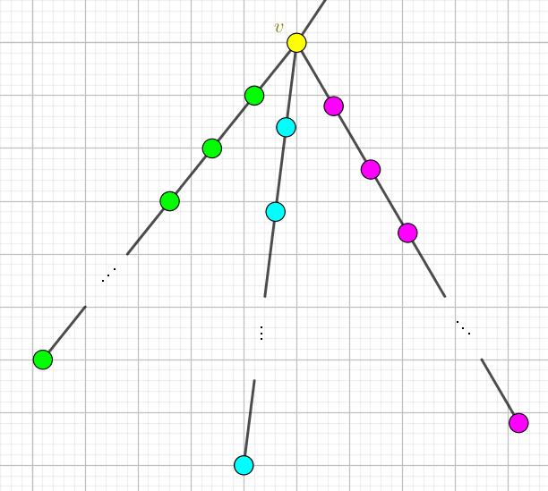

在一颗树上，你和 scx 轮流染色。你先手，染黄色。scx 后手，染绿色。染完后，所有和绿色相邻的黄色节点都变色为绿色。如果还有黄色节点，那么你赢了。
给定一颗树，求你是否能赢 (假设你和 scx 都采取最优策略)。
输入按照以下格式给出：
n m a1 b1 a2 b2 …… an-1 bn-1
其中数据满足 $n \leq 10^5; 1 \leq a_i, b_i \leq n$，且保证是一棵树。
输出一行一个字符串，First 代表你能赢，Second 代表你不能赢。
博弈论神题……
先考虑一条链的情况，玩一玩即可发现当链长为奇数时先手胜，链长为偶数时后手胜。
那么考虑一棵树的情况。假如一个节点 $v$ 有若干个子树，且每个子树是一条链 (见下图)。那么如果有两条链都能满足先手胜 (奇数)，则可以以如下方式取胜：
将点 $v$ 染黄色，然后后手随便染一个，然后我们在若干条链中找一条没有染过绿色的点，在这条链上跟她玩，显然是可以取胜的 (因为节点 $v$ 是黄色的，不会影响链中第一个点)。
类似地，如果这些子树不一定是链，且至少有两个子树能满足先手胜，则 (递归地) 按照上述方法依然可取胜。
如果这些子树恰好有一个是先手胜，那么如果你选了 $v$，她可以选那棵子树的根，否则她选择 $v$，然后就剩下若干个 P 状态 (必败态)，于是脑补 SG 函数那套理论，可以得到你是输的。
如果这些子树没有一个是先手胜，那么你先选择子树的根 $c_i$，她必须选择 $c_i$ 的使先手胜的那个子树 (否则你直接去那个子树跟她玩就必胜)，那么你把子树选光后，她还没来得及把 $v$ 染绿，于是你把 $v$ 染黄就 AK 了。
注意的是，如果有两个子树能满足先手胜，那么直接 exit() 输出先手胜，不用进行递归。否则将树遍历一遍，然后跑个不像 DP 不像 SG 的玩意儿就可以在 $O(n)$ 时间内得到答案。(话说只有一组数据感觉分比较好骗)
#include <bits/stdc++.h>
#define N 100034
#define M 256101
using namespace std;
int n, e;
int u, v, i;
int to[M], first[N], next[M];
inline void addedge(int u, int v){
to[++e] = v; next[e] = first[u]; first[u] = e;
to[++e] = u; next[e] = first[v]; first[v] = e;
}
int dfs(int x, int px){
int i, y, scx = 0;
for(i = first[x]; i; i = next[i])
if((y = to[i]) != px)
if((scx += dfs(y, x)) >= 2)
return 2;
return !scx;
}
int main(){
scanf("%d", &n);
for(i = 1; i < n; ++i){
scanf("%d%d", &u, &v);
addedge(u, v);
}
puts(dfs(1, 0) ? "First" : "Second");
return 0;
}
坑1：感觉一点都不好想，可能博弈论 SG 函数那套理论还要加强啊……